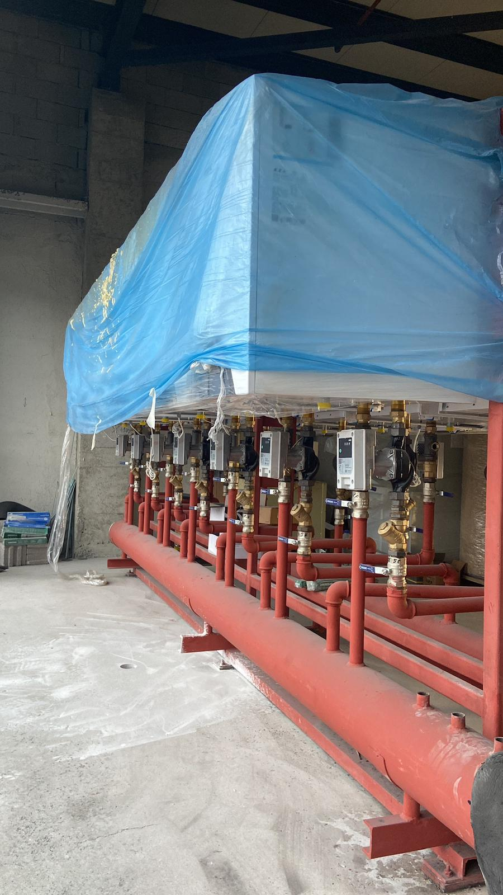
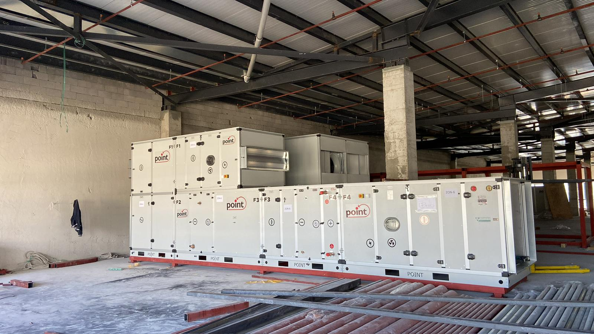

Güvenilirlik
Verdiğimiz sözü, belirlediğimiz kapsamı ve iş programını titizlikle takip ederiz.
Projelerinize yalnızca montaj değil; planlı süreç yönetimi, teknik güven ve uzun vadeli değer katıyoruz.

BİZ KİMİZ?
MAG Mekanik; ticari, endüstriyel ve konut projelerinde mekanik tesisat sistemlerini anahtar teslim yaklaşımla planlayan ve uygulayan teknik bir ekiptir.
Projelendirme, keşif, uygulama, test ve devreye alma aşamalarını tek ekip organizasyonuyla yürütür; iş programına uyumlu, temiz ve güvenilir çözümler üretiriz.
Sahadaki tecrübemizi doğru malzeme seçimi ve şeffaf iletişimle destekleyerek müşterilerimiz için sürdürülebilir sonuçlara odaklanırız.
DEĞERLERİMİZ
İyi bir mekanik tesisat projesinin yalnızca montajdan ibaret olmadığını biliyor, her aşamaya aynı ciddiyetle yaklaşıyoruz.
Verdiğimiz sözü, belirlediğimiz kapsamı ve iş programını titizlikle takip ederiz.
Uygulamaları standartlara ve uzun dönem işletme ihtiyaçlarına uygun kurarız.
Keşiften teslime kadar tüm aşamaları ölçülü ve koordineli biçimde yönetiriz.
Projenin her adımında anlaşılır, erişilebilir ve çözüm odaklı iletişim kurarız.

VİZYON VE MİSYON
Türkiye genelinde mekanik tesisat uygulamalarında güvenilirlik, teknik kalite ve iş disipliniyle ilk akla gelen markalardan biri olmayı hedefliyoruz.
Her projede doğru keşif, şeffaf süreç yönetimi ve standartlara uygun uygulama ile güvenli, verimli ve sürdürülebilir mekanik tesisat çözümleri sunuyoruz.
Yeni projenizi konuşalımYENİ PROJENİZ İÇİN
Doğru keşif, net planlama ve güvenilir uygulama için ekibimizle iletişime geçin.